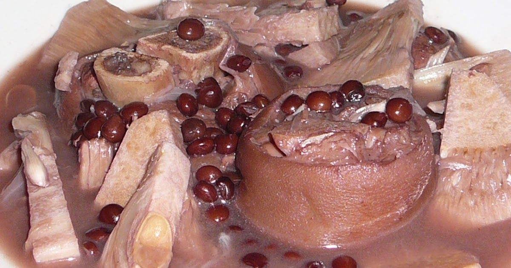
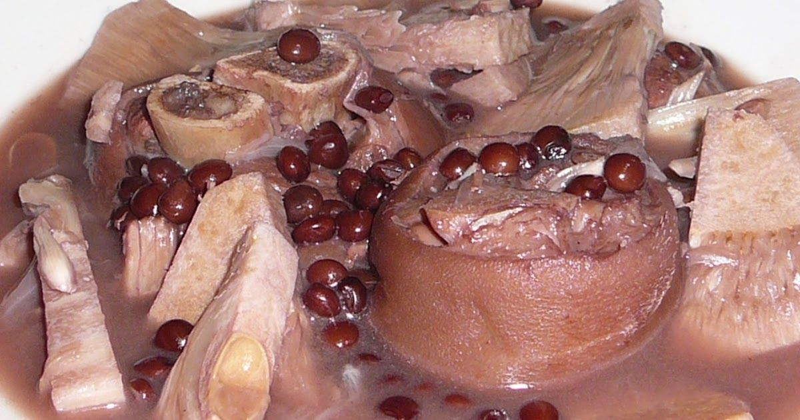

Negros Occidental Dishes
Explore comfort foods of Bacolod and beyond—each dish layered with local flavors and stories.
- Chicken Inasal: Smoky grilled chicken
- Piaya: Sweet muscovado flatbread
- KBL: Pork, jackfruit, and pigeon pea stew
- Laswa: Vegetable soup
- Napoleones: Creamy pastry layers
 
